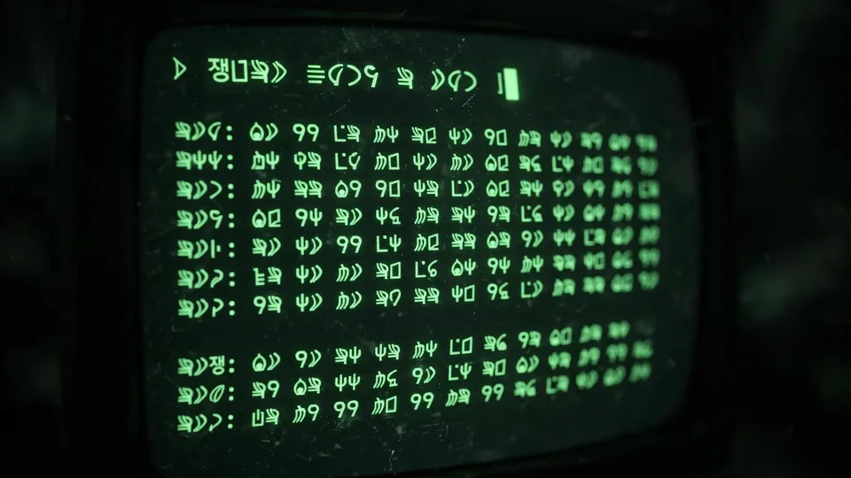

Reverse-engineer anything with one 8 KB skill: a hands-on guide to leanrea
REA turned your coding agent into a reverse engineer — at the price of a 207-tool MCP server and a context bill to match. leanrea, a single 8 KB skill file that picked up over 1,400 GitHub stars in its first week, does the same job with the shell tools your agent already has. This tutorial installs it and points it at a real binary.
SKILL.md (MIT, by aicodeking) that teaches your coding agent to reverse-engineer apps and binaries with plain shell tools instead of the 207-tool REA MCP server — 38% less wall time and 35% lower cost in the author's benchmark, at equal accuracy.- Who: aicodeking's leanrea, MIT licensed, released 2026-10-17; over 1,400 GitHub stars within six days.
- What: one 8 KB
SKILL.mdreplaces REA's 25 MB npm package plus MCP server with 207 tools (3.35 MB of tool definitions). - Context cost: 400.7k tokens / $1.60 to get a "Reply OK" with all REA tools loaded, versus 34.5k tokens / $0.09 with leanrea.
- Benchmark: 38% less wall time, 35% lower cost, 56% fewer turns and 60% fewer tokens than REA, at the same accuracy (Claude Code headless, Sonnet 5.5, macOS arm64).
- Install:
npx skills add aicodeking/leanrea(or copy the SKILL.md by hand for agents without skills support).
Reverse engineering with an AI agent has a tooling problem. The popular route is REA (Reverse Engineer Anything), a well-built MCP server that puts a structured layer between your agent and tools it can already run: asar, otool, nm, go version -m, jadx, apktool, Ghidra, tshark, binwalk, sqlite3. It works — but it installs a 25 MB npm package and registers 207 tools (3.35 MB of tool definitions) in your agent's context. Just getting a "Reply OK" with all of them loaded costs 400.7k tokens, about $1.60.
leanrea asks whether the layer is the product. It's a single 8 KB SKILL.md — no MCP server, no new tools — that tells the agent which command is fastest for each kind of target, hands it ready-to-paste recon commands, and lists the traps REA's code handles for you. The agent then runs the real tools itself over Bash. Released on 2026-10-17 by aicodeking (MIT licensed), it collected over 1,400 GitHub stars in its first six days.
What you'll need
- An agentic coding tool with skills support — Claude Code, Codex, Cursor, Gemini CLI or OpenCode (for agents without it, the SKILL.md is plain text you can paste into rules).
- Node.js (for
npx) to run the skills CLI installer. - The reverse-engineering tools for your platform:
ripgrep, and whatever your targets need —asarfor Electron apps, Xcode command-line tools (otool,nm,dyld_info) on macOS,jadx/apktoolfor Android APKs. - A target you are allowed to inspect — a copy of an app or binary. The skill's first rule is: work on a copy, never the original.
Step 1 — Install the skill
The skills CLI finds the leanrea skill and asks which agents to install it for:
npx skills add aicodeking/leanreaNon-interactive variants, straight from the project's README:
npx skills add aicodeking/leanrea -g # your user level, every project
npx skills add aicodeking/leanrea -a claude-code -y # Claude Code only, no prompts
npx skills add aicodeking/leanrea -g -a '*' -y # every supported agent, user level
npx skills update leanrea # pull the latest version laterPrefer to see exactly what lands on disk? Install by hand:
git clone https://github.com/aicodeking/leanrea
mkdir -p ~/.claude/skills && cp -R leanrea/leanrea ~/.claude/skills/
Step 2 — Pick a target and make a copy
Reverse engineering starts with triage, not disassembly. leanrea's rule is to route by file output and magic bytes first — the fastest command for each target type:
cp -R /Applications/SomeApp.app ~/re-lab/SomeApp.app # work on the copy
file ~/re-lab/SomeApp.app/Contents/MacOS/* | head -20The skill's router covers Electron/asar bundles (IPC, preload, contextBridge, fuses), minified web bundles and source maps, Hermes/bytenode, Mach-O (exports, imports, entitlements, ObjC/Swift), ELF/PE disassembly, Go build info, Rust cargo-auditable, .NET, Android APKs, the Flutter snapshot hash, WASM, SQLite, plists, pcap/HAR, firmware, websites and runtime tracing.
Step 3 — Ask the agent, demand evidence
Invoke the skill and ask a concrete question:
/leanrea How does the search feature in Foo.app work? Show the evidence.The skill ships "first moves": one paste-and-run command each for native binaries and Electron apps that gets the whole inventory — strings, imports, exports — in a single tool call. Its speed patterns matter here: start from strings and imports, find a string's function through the otool literal-pool comments, read call sequences rather than every instruction, and diff inventories before diffing code. For extracted trees, search with rg -uu, because bundlers hide code in dot-folders like .webpack/.
Step 4 — Read the verdicts like a reverse engineer
leanrea forces the agent to mark each claim as seen, inferred or unknown. Treat "inferred" as a hypothesis to verify, not an answer. The raw commands it reaches for are the point — the project's own comparison shows how much the MCP layer costs on simple operations:
- Go build info: REA takes 0.56 s;
go version -mtakes 0.06 s. - Mach-O overview: REA takes 3.32 s;
otool+dyld_info+nmtakes 0.04 s. - A real Electron app: REA fails on asar integrity until you pass a flag, then takes 47.9 s and emits 140 MB of JSON;
asar extractplusrg -uutakes 4.8 s and 24 KB.
Step 5 — Check the benchmark (and its caveats)
The author benchmarked with Claude Code headless (claude -p), Sonnet 5.5 on macOS arm64: 4 reverse-engineering tasks × 3 reps × 3 arms (leanrea, no skill, REA), graded against hand-made answer keys. Totals: leanrea 388 s / $2.17 / 55 turns / 2.40 M tokens / 74 of 75; no skill 479 s / $2.21 / 81 turns / 3.11 M tokens / 67 of 75 (one refusal); REA 627 s / $3.36 / 124 turns / 5.93 M tokens / 75 of 75. Against REA that's 38% less wall time, 35% lower cost, 56% fewer turns and 60% fewer tokens at the same accuracy. Its one partial miss named an older IPC channel instead of the v2 one — both channels exist.
You can reproduce it: cd bench && ./setup.sh && ./run_all.sh (36 runs, about $8 on Sonnet), with raw per-run metrics in bench/results/final.jsonl and full tables in bench/BENCHMARK.md. Read the caveats before quoting the headline numbers — see the limitations below.
What you built
A reverse-engineering setup where your coding agent needs zero new MCP tools: one 8 KB text file, your shell, and the RE tools you already have. The agent routes each target to its fastest command, batches probes into single shell calls, and reports claims as seen, inferred or unknown — which makes its answers auditable instead of vibes-based.
Honest limitations
- The benchmark is small and one-sided in REA's favor in one way: only 3 reps per cell, one model, one machine — and REA was tested in its best case, since Claude Code's deferred tool search loads MCP tools on demand. Agents that load every tool pay the full 400k-token row.
- The plain model is already decent at this. leanrea's gain over no skill (about 19% faster, 32% fewer turns) is smaller than its gain over REA — the big win is deleting the MCP layer, not unlocking a new capability.
- You still need the real tools. Ghidra, Hopper and jadx weren't installed in the benchmark, so the native tasks ran on Xcode tools for both arms. The skill is a routing layer, not a disassembler.
- Targets are macOS-flavored. The benchmark and most worked examples are macOS arm64; your mileage on PE firmware or Hermes bundles will vary with what's installed.
- Credit where due: REA is, in the author's own words, an impressive, well-documented project by the morluto team — most of the gotchas in this skill came from reading their code. leanrea is not affiliated with REA.
Frequently asked questions
Do I need an MCP server or an API key to use leanrea?
No. leanrea is a single 8 KB SKILL.md — no MCP server, no npm package, no new tools. Install it with npx skills add aicodeking/leanrea (or copy the file by hand), and the agent uses its own Bash plus whatever reverse-engineering tools you already have installed.
Is leanrea really faster and cheaper than REA?
In the author's benchmark — Claude Code headless with Sonnet 5.5 on macOS arm64, 4 tasks × 3 reps × 3 arms — leanrea used 38% less wall time, 35% lower cost, 56% fewer turns and 60% fewer tokens than REA at the same accuracy. The caveats: only 3 reps per cell, one model, one machine, and REA was tested in its best case because Claude Code loads MCP tools on demand.
Which targets and tools does it cover?
Electron/asar bundles, minified web bundles, Hermes/bytenode, Mach-O, ELF/PE, Go build info, Rust cargo-auditable, .NET, Android APKs, WASM, SQLite, plists, pcap/HAR and firmware. It routes each to the fastest real command — asar, otool, nm, dyld_info, go version -m, jadx, apktool, Ghidra, tshark, binwalk, sqlite3 — so those tools must be installed on your machine for the skill to use them.